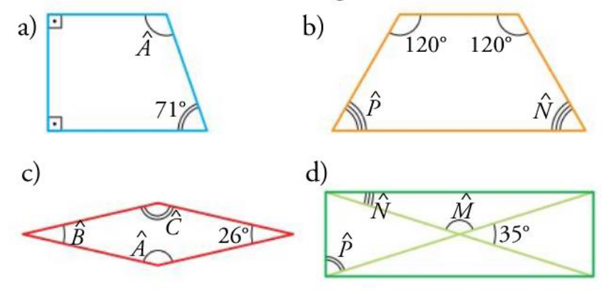
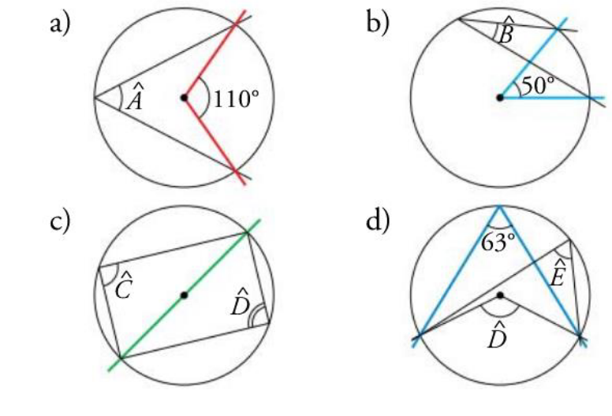
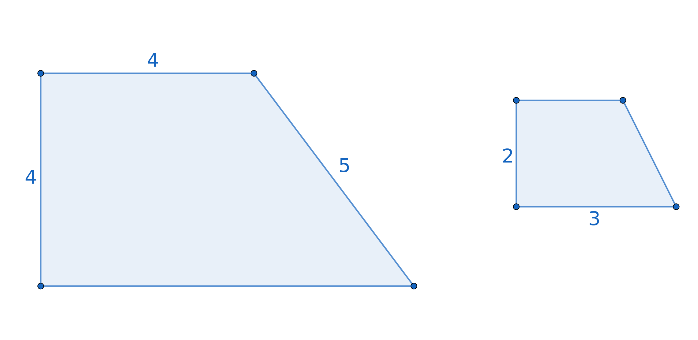
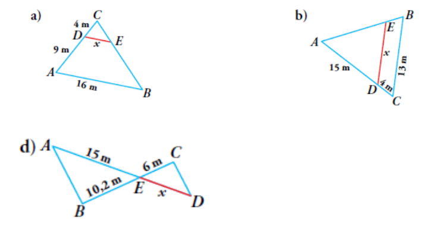

Un ángulo completo de una circunferencia mide 360º
Un radián es el ángulo central de una circunferencia que abarca un arco de igual longitud que el radio de la misma.
Un angulo completo de una circunferencia mide \[2 \pi~rad\].
1Pasa de radianes a grados sexagesimales y viceversa:
Los ángulos de un polígono de \[n\] lados suman \[180º\cdot (n-2)\].
Los de un triángulo por lo tanto 180º y los de un cuadrilátero 360º.
2Calcula el valor de los ángulos que faltan:
La medida del ángulo inscrito es la mitad del ángulo central que abarca.
3Calcula el valor de los ángulso que faltan:
Dos magnitudes son directamente proporcionales si el cociente entre ellas es constante. Dicha constante se denomina razón de proporcionalidad.
4Dadas dos magnitudes X e Y directamente proporcionales y conocida \[k = \frac{X}{Y}=3 \] su razón de proporcionalidad, completa la siguiente tabla:
| X | 18 | |
|---|---|---|
| Y | 10 |
Dos polígonos son semejantes si sus ángulos son iguales y sus lados proporcionales. La razón de proporcionalidad se llama en este caso razón de semejanza.
5Calcula las medidas de los lados que faltan sabiendo que son figuras semejantes:
Si \[k\] es la razón de semejanza de dos figuras geométricas, su area tiene razón de semejanza \[k^2\] y su volumen tiene razón de semejanza \[k^3\].
6Calcula el volumen y la superficie lateral de las figuras semejantes a las dadas con razón de proporcionalidad 2.
Una escala se indica con una razón de la forma 1:20 donde se indica que cada unidad del plano o de la maqueta se corresponde con 20 unidades de la realidad que pretenden representar.
6En un mapa cuya escala es 1:1 500 000, calcula:
7Indica, en cada caso la escala del plano:
Dos triángulos en posición de tales son semejantes y por tanto sus lados son proporcionales.
8Calcula en cada caso la longitud del segmento DE:
9Usando el teorema de Tales, calcula el volumen de los siguientes troncos de conos/pirámide:
10Se desea calcular la altura de un arbol para lo cual a una determinada hora del día se mide la sombra que proyecta dando como resultado 2,37m. A la misma hora se mide la sombra que proyecta una estaca de 163cm dando por resultado 76cm
11Dado los triángulos rectángulos siguientes, calcula la razones trigonométricas (seno, coseno y tangente) de sus ángulos agudos:
12Calcula el seno, el coseno y la tangente de los ángulos 30º, 60º e 45º (ou \[\frac{\pi}{6}\], \[\frac{\pi}{4}\] e \[\frac{\pi}{3}\] rad) partiendo de un triángulo rectángulo isósceles y de un triángulo equilátero partido por la mitad. A los lados de estos triángulos puedes darles un valor o hacerlo con el valor genérico \[l\].
Resolver un triángulo consiste en conocer el valor de sus lados y de sus ángulos.
Teorema e Pitágoras
Inversas de las funciones trigonométricas
13Resuelve los siguientes triángulos:
14Resuelve los siguientes triángulos:
\[sen^2 (\alpha) + cos^2 (\alpha) = 1 \]
\[tan(\alpha) = \frac{sen(\alpha)}{cos(\alpha)} \]
\[ 1 + tan^2(\alpha) = \frac{1}{cos^2 (\alpha)}\]
15Calcula todas las razones trigonométricas (seno, coseno, tangente) a partir de la dada. Considera que todas son positivas:
16Indica en que cuadrante está cada uno de los siguientes ángulos y el signo de sus razones trigonométricas (seno, coseno y tangente):
17Deduce la relación entre dos ángulos que se diferencian en 90º y 180º empleando el razonamiento seguido en la explicación anterior.
18Calcula las siguientes razones expresándolas en función del valor de ángulos del primer cuadrante
| 0º | 30º | 45º | 60º | 90º |
180º | 270º | 360º | |
|---|---|---|---|---|---|---|---|---|
| sen |
||||||||
| cos |
||||||||
| tan |